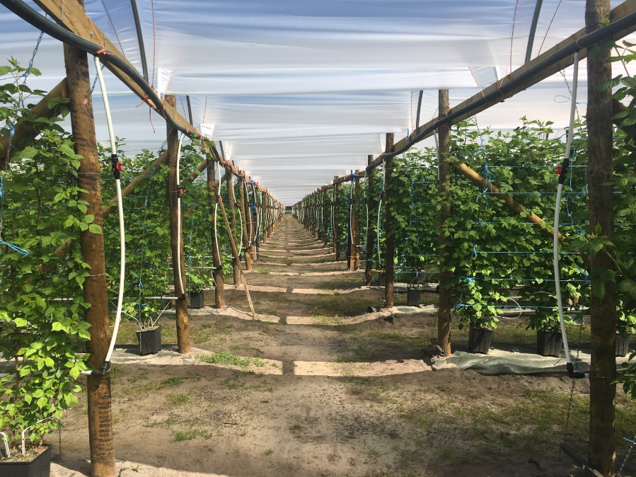
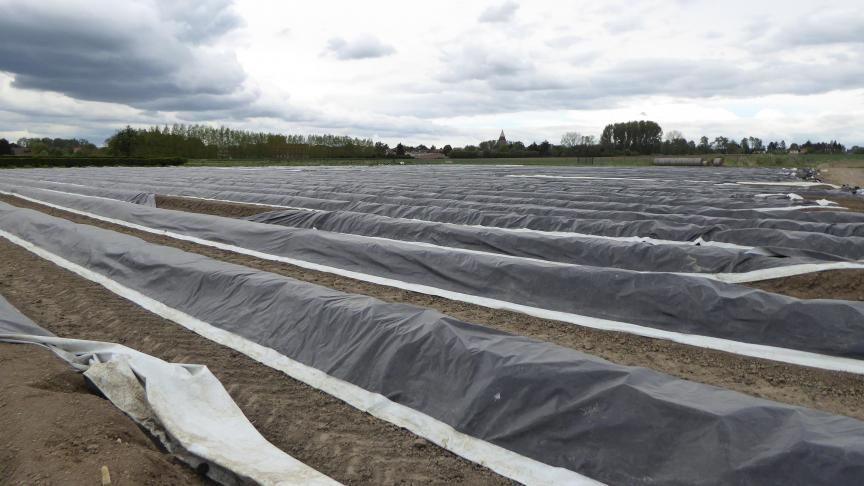

Cultures
Informations générales basées sur des pratiques courantes de culture en France (données indicatives, variables selon sol, climat et variétés).
Framboises
Plantation
- Période: automne à début printemps (hors gel).
- Sol: léger, riche en matière organique, bien drainé; paillage conseillé.
- Espacement: 40–50 cm entre plants sur le rang, 2–2,5 m entre rangs.
- Conduite: palissage simple (fils) pour maintenir les cannes et faciliter la récolte.
Entretien
- Irrigation régulière en période sèche; maintenir le paillage contre l’herbe et l’évaporation.
- Taille: supprimer les cannes ayant fructifié. Pour variétés remontantes, possibilité de rabattre court en hiver (récolte automnale) ou de conserver une partie des cannes pour une petite récolte de début d’été.
- Apports: compost mûr au printemps; surveillance maladies (botrytis) et ravageurs.
Récolte
- Manuelle, tous les jours (2 jours maximum), lorsque les fruits sont bien colorés et se détachent facilement.
- Manipulation délicate; conservation courte au frais.
Période de vente (indicatif)
Selon variétés et climat: juin–juillet (variétés non remontantes) et août–octobre (variétés remontantes). Période précise sur l’exploitation: Début Juin à mi-Septembre.
Asperges
Plantation
- Période: fin hiver à printemps (plants griffes de 1 an).
- Sol: léger, sablo-limoneux, drainant; emplacement ensoleillé.
- Mise en place: griffes à 20–30 cm de profondeur, 30–40 cm sur le rang, 1,5–2 m entre rangs.
- Buttage: formation de buttes pour les asperges blanches (poussent à l’abri de la lumière).
Entretien
- Désherbage soigné, arrosages en années d’installation.
- Renouvellement des buttes en fin d’hiver; fertilisation organique modérée.
Récolte
- À partir de la 2ᵉ–3ᵉ année après plantation.
- Extraction des turions à 20–22 cm avec gouge; récolte quotidienne en pleine saison.
- Blanches: cueillies sous butte; vertes: laissées à la lumière, cueillies au-dessus du sol.
Période de vente (indicatif)
Principalement de mars à juin selon régions et météo, avec un pic en avril–mai. Période précise sur l’exploitation: Début Mars à mi-Mai.